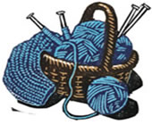

Robert Glass writes that software creation is a highly creative process and yet in the software industry, its possible to predict time required to complete a creative process such as those required to develop new software. It is possible to predict a future product based on the process of creation and personal decisions. The more a developer is comfortable with his surrounding during the creation process, the better the outcome.
In less than 1 KLOC, it is possible to write a language independent IDE that supports test-driven development, literate programming, version control and source code libraries. Using the right scripting tools like Awk with a leverage of other tools like versions control and Emacs, pretty much anything is possible.
Fully understanding an average program requires a boundless capacity to digest details and an equal capacity to comprehend them all at the same time. The question is, “Is language an issue when it comes to writing a program?” To answer this question, we divide our problem into two levels; the software level and the knowledge level. The software level involves writing, building, reading, testing and storing. At the knowledge level, we need to be able to run code through a set of states that we prefer. Also, we need data mining tools that are useful at finding errors and controlling runtime. We will call it the Smart IDE.
|
 Adapted from the previous Knit structure, we are reworking the whole system to setup Knit2. The main goal is to come up with a language that supports markup, website update, version control, test engine and in-line text to executable code.
Adapted from the previous Knit structure, we are reworking the whole system to setup Knit2. The main goal is to come up with a language that supports markup, website update, version control, test engine and in-line text to executable code.  A lot has changed since the last draft of the design proposal document was submitted. The new structure and specifications among other things are being included in this new document.
A lot has changed since the last draft of the design proposal document was submitted. The new structure and specifications among other things are being included in this new document.